PdDroidParty_some_examples
This repo contains examples for the PdDroidParty framework : http://droidparty.net/
PdDroidparty enables you to run your Pure-Data patches on android, right away. It adds up a lot of wonderfull features such as replicating your sliders, enabling to theme and customize your patch with glorious svgs, deal with multi-touch, multi-window , accelerometer, networking etc.
This is not an introduction to Pure-Data, so this shouldn't be your first tutorials, but it still aims at beginners, it starts easy and finishes with some advanced stuff.
It builds on previous work made on 2012, if I find time I'll update this with new examples of the latest features.
Check out the readme in each folder. (for now comments in patchs are in french only, this should change soon).
The first three tutorials are basic, they cover basic things in pd and give a few ressources to build on, after that we will look at more advanced stuff, and we will learn how to theme our programms with svg to make them look super-nice !
A few ressources
- Pure Data, and software made around Pure Data
http://puredata.info/community/projects/software : download Pd Extended.
http://msp.ucsd.edu/software.html : download latest Pd vanilla.
http://mccormick.cx/projects/PdDroidParty/ : download the last version of PdDroidParty.
- Pure Data forums et tutorials
http://puredata.info/docs/workshops/ArtAndCodePdDemo (tuto)
http://www.obiwannabe.co.uk/ (tuto)
http://www.pd-tutorial.com/english/index.html (tuto)
http://en.flossmanuals.net/pure-data/ (manual)
http://puredata.hurleur.com/index.php (english forum)
http://codelab.fr/pure-data (french forum, with a very detailed ressource page, as a sticky post)
Content
SAMPLERS
This first example will help us to get familiar with Pure Data its interface and basically how it does work. We will learn to play audio files synched on to another using code snippets from the community, and how to control the volume of the playback. We will also discover how we can interact with a smartphone with the tools provided.
HOW DOES IT WORK ?
This little application allows you to mix 4 audio loops together, a little interface is available (see snapshot), and for each loop you can toggle it and adjust the volume through a slider. There’s also the possibility to have several loop packs, and switch between them
Loops were (for most of them) created from Pd patches available for download on the community forum. The app has been to designed to run on entry level smartphones (from 2012 !), if you have a powerfull smartphone, a bigger screen etc. Don’t hesitate to modify the patch to add more and more loops. Audio files need to be at a samplerate of 22050hz to be played back.
MAIN CONCEPTS
For further details, please refer to the comments included in the patch. The goal is not to understand everything but to have an idea how to deal with samples and keep them in synch.

The principle is simple, we need to play a pack of pre-recorded audio loops and play them in synch; that is to say that if we want to launch the next loop we will need to wait for the playing one to loop (same principle as in Abbelton Live).

We will load a pack of sounds in tables using the [soundfiler] object. To play back 4 sounds we will use 5 tables, as we will use a table to synch the playback of others, this control table will send a bang each time it loops that will be received by others. We’ll use the toggle to “arm” the playback that will start only when this bang is received.

Each loop will use a sampler abstraction (it’s simply another Pure Data patch being in the same folder as your main patch) this abstraction can be loaded by creating an object and naming it by its name. It will enable us to use the “$0-“ messaging system, which will be replaced by an unique identifier on creation. For instance a “$0-bang” will be replaced by “1088-bang” in an abstraction and by a “1055-bang” in another; it’s usefull to copy/paste chunck of codes without them interfering with one another

Something important is also to have well prepared samples. They should be the exact same duration, and recorded (or converted) at a 22050Hz, in .wav format.
EFFECTS
Let’s have a look at the microphone input from our smartphone, we will learn how to alter the audio coming through the mic in real time.
HOW DOES IT WORK ?
The application enables you to choose between 3 sound sources (microphone input, noise generator and a basic oscillator), sound signals will then be routed through a chain of effect, then to the speaker (or headphones).
This is a kind of Kaoss pad. It will enable you to use effects with a control surface (the [touch] abstraction by Chris). You’ll just have to move your finger along the pad to modify the values sent. An assignation matrix is available, enabling you to toggle on and off effects and choose which value is sent to control this effect (x position value, y position , or x+y/2). The chain of effect is composed from top to bottom of a band-pass, a ring modulator, a random delay, a comb filter and finally a reverb.

MAIN CONCEPTS
An effect is used to alter an audio stream going through it. In pd it can be seen as a subpatch or an abstraction using audio inlets [inlet~] and outlets [outlet~]. In between the audio signal will be modified using objects like [*~] to multiply an audio signal by another (or even a number), the couple of objects [delread~] et [delwrite~] to write the audio signal in a buffer to be read later on etc.
HOW TO PREVENT DATA FROM PASSING THROUGH ?

[spigot] will help you to block or pass data. The left inlet is for data flow, the right inlet receives à 0 or a 1 (0 blocks data, 1 lets the pass). A toggle object in the Gui send those messages for each effect. The data flow comes from the [touch] abstraction, created this way [touch sizeX sizeY XY] you receive messages by an object [r XY], then you just have to link this object to a [unpack f f] to get X and Y values separately.

A [spigot~] object exists to deal with audio signals. We’d rather use a different technique to do so : we’ll use the [*~] object instead, in the left inlet comes an audio signal and the right inlet will receive a 0 or 1. If you multiply 0 you get nothing, if you multiply by 1 then you get the exact same message. This is also useful to control output volume of a patch, link a slider ranging from 0 to 1 to the left inlet, and you get a linear control of the volume moving your slide (we used this in the first episode to build the mini loop mixer).
AN EFFECT CHAIN
This is the complete effect chain from the XY-pad-droid, we receive audio signals at the top [noise~] and [adc~] objects, those signals will go through each effect to the output.
ADC = analog digital converter = mic. DAC = digital analog converter = speakers.

Of course the order you put the effects in has its importance, by putting the reverb first you'll get a different set of sonic possibilities.
THE [TOUCH] abstraction
We use the [touch] abstraction provided by Chris, and [toggles] from the pd gui elements. To make a gui element send its value you need to specify a “send-symbol”, by right-clicking the object, selecting “properties” and specify the name the value will be sent to entering “mysend” in the send-symbol field will enable you to receive the value of the toggle (0 or 1) anywhere in your patch with a simple [r mysend] object. For Chris’ [touch] abstraction you need to create an object [touch 50 50 hello], this will create a surface of 50px X 50px which will send touch events (ie position of a finger in this surface) anywhere in the patch by creating a [r hello] object . Then you can use [unpack f f] to get x and y values and then scale them to your needs.
Ressources
Rjdj library is an amazing collection of various objects (all vanilla, and all documented) effects start with "e_" https://github.com/rjdj/rjlib
Abstraction collection from the Virginia Tech laptop orchestra (all vanilla) http://l2ork.music.vt.edu/main/?page_id=25
A big collection of objects, including a number of effects, synths and other stuff : http://puredata.hurleur.com/sujet-1982-diy2-effects-sample-players-synths-sound-synthesis
A detailed explanation on how to implement a network of variable delays to create a texture (check the following index : 3.4.2.7 Texture) http://www.pd-tutorial.com/
If you are brave enough check this one out, it’s a detailed article on how to build a reverb with Pure Data presented at the PdCon 2011 at the Bauhaus university of Weimar : http://www.uni-weimar.de/medien/wiki/PDCON:Conference/Reverb_Design
SYNTHESIZERS
This time we will create a kind of mini Piano.
HOW DOES IT WORK ?
Our patch is a small piano with a GUI, some effects are incorporated to the controls, you can also choose the transposition factor, the note duration, and you can test out the nine sound presets that are available. This synthesizer is adapted from a patch by Tom Erbe.
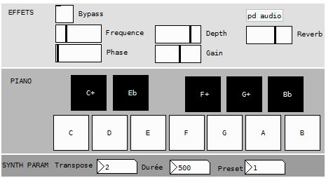
MAIN CONCEPTS
Appart from sound synthesis several important points will be explained there (as a synthetizer needs to reveive informations to play). Please refere to comments inside the patches.
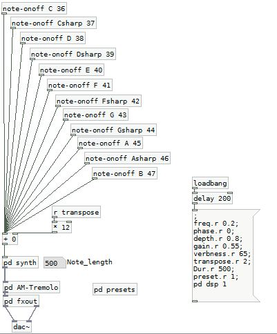
At the top we have a custom made abstraction to receive data from our interface, it will listen to a specific gui object (one of the piano "keys"), and will toggle messages to play notes with our synth. Then we have a tremolo effect, a reverb and then our audio output.
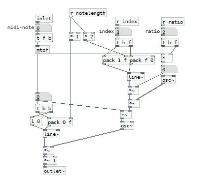
It takes a midi pitch for inlet and it needs to have a 'notelength', an 'index', and a 'ratio' parameters set beforehand.
INITIALIZING PARAMETERS
[loadbang] will send a bang on the startup of the patch, it’s usefull to initiate a lot of parameter such as synth parameters, or effects values etc.
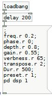
You can use a big message object to bundle all those initialization parameters, you just need to put ';' at the begining and one after each message.
Notice that we wait 200 ms before sending everything, it's just to be sure that every object is loaded first.
POLYPHONY
Polyphony can be achieved by various ways, it’s much more elegant with dynamic patching, but we will use a simple way of doing it with the [poly] object. This is the way to do it manually in a context where you don't need a lot of voices. (To achieve polyphony with style you can always look up the [u_makepoly] object from the Rj library.)
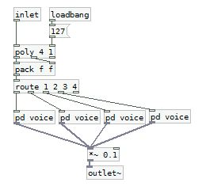
[poly] uses two arguments, the first one will indicate the number of voices you want the second one is the voice-stealing argument (that is to say, if all your voices are busy, it will “steal”one to output the new incoming value). [poly] receives a couple of value (note,velocity) respectively left and right inlet (beware, if velocity is 0 it will not output anything, and also the order of argument has it’s importance it should receive velocity first), and will return a triplet (voice_id, note, velocity). Then using [pack f f f] and route 1 2 3 4 we will be able to send (note,velocity) couples to voices abstractions or subpatches. In this example we leave the velocity values aside, as the touchscreen has no pressure informations. Furthermore our synth are initialized with a default velocity. An important point is that [route] will get rid of the first number of the list to pass it on : if it receives a message [1 60 127( the ouput of the first outlet will be [60 127(.
ABSTRACTIONS ET SUBPATCHES
As we already discussed it a litle an abstraction is a Pure Data patch, saved in the same folder as the main patch it can be created by just creating an object with the very same name. It’s the case of the [note-onff] patch (shown in the first snapshot of those explanations). This is useful when we use the same bit of code several times in one patch, if you modify save an abstraction changes will apply to all the places it is used. We can also use arguments when developing abstractions, see the next paragraph for that. A subpatch is useful to make the code more readable and compact. You just need to create called « pd my_subpatch », a new blank page will popup, you just need to write your code in it, creating inlets and outlets or send and receive will help you to communicate with the rest of your code. You can also just copy/paste a bit of code in it.
USE OF ARGUMENTS IN ABSTRACTIONS ($0, $1, $2, …)

The $0 argument is a bit of a special one. It is used INSIDE abstractions to help us deal with messages inside the abstraction, so that a message sent inside one abstraction stays in it, we will then use $0- as a prefix to those messages. When loading the abstraction $0 will be replaced by a random number (not-redundant), that is to say that one abstraction will then use a “1088-bang” whether the next one will use a “1158-bang”. In the first episode we use this in the [mon_sampleur] abstraction, in the example above we receive [r Dur] it will the same value (coming from the Gui) for all copies of this abstraction. Using $1, $2, $3 etc is different. It enables you to specify creation arguments. Above in the [note-onoff] abstraction we use $1 and $2. If you create un object called [note-onff C 60], $1 will be replaced by “C” and $2 by “60”. In this case $1 will be used to specify messages names to communicate with the GUI : a 1 will be received when you’ll toggle the toggle labeled “C”, after a delay specified by “Dur”a 0 will be sent back to it to reinitiate it using “C.r”. The same goes for $2 which will be replaced by “60”.
Ressources
Rjdj library synths start with "s_" and try to make [u_makepoly] work with a few synths it's really powerfull/ https://github.com/rjdj/rjlib
Great examples of sound design with Pd (a truly amazing and interesting ressource) : http://obiwannabe.co.uk/tutorials/html/tutorials_main.html There’s a full book associated with those, it’s worth the price : http://aspress.co.uk/ds/about_book.php
Some educational patches made by Tom Erbe : http://musicweb.ucsd.edu/~tre/wordpress/ The soundhack page (externals developed by Tom Erbe as DAW plugins at first the ported to Pure Data (at the bottom of the page on the right are the Pure Data externals) : http://soundhack.henfast.com/freeware/
SEQUENCERS
In this episode we will start building more evolved programs, using graphical interfaces, and those applications will be able to create real musical content. The sequencing concept is very important to electronic music as it will help you to create instruments that will share the same time line.
HOW DOES IT WORK ?
So what is a sequencer ? A sequencer is a tool to help you synch events between one or more instruments. Simply put a sequencer will cycle through a certain number of steps (ie count from 0 to 15 for a 16-step sequencer), each step you will be able to send one or several values to other parts of your program. If several sequencer are used they can count in synch if they are linked to a common metronome ([metro] object in pd).
The application proposed here, will synthesize what we’ve been discovering in the first three episodes: we will play audio files, use synthesizers, and effects, all together to have a glimpse of what an autonomous application on a smartphone can do.
Our groove box is a drum sequencer with an acid bass instrument. This tool will enable you to build a real rhythmic base for an electro track. After the recent updates on the DroidParty project, we can now use svg templates to improve the visual aspects of our programs.


MAIN CONCEPTS
The button of the upper left corner is used to start a metronome at a chosen speed (through the number box next to it). On the upper right corner the button will enable you to cycle through the soundbankx available for drum sounds.
The line below is our first sequencer that will be used to trigger drums. The button on the left will help you to choose which voice you want to edit between the four available (kick, hihat, snare, cymbal), if you hit the button the voice displayed will change so that you can now edit it. Each toggle represent a step, and there are 16 of them so it is a 16-step sequencer.
The group of five lines controls a bass synthesizer. The first one will control the note that is played (C, Csharp, D …), the second one will adjust the octave of this note (0 bass, 4 high), the third line will let you choose the duration of the note for instance “/2” will play a half note (the length is computed from the tempo you set earlier), the fourth line will enable you to accentuate a note, and the fifth will create a glissando between the previous note and this one.
Right below there is to ‘touch’ surfaces to apply effects on both the drums and the bass synth. On the right there are three sliders to help you change the sound of the synth.
A DRUM SEQUENCER ?
A sequencer is in most case a series of instructions that will be played in synch with a metronome. A sequencer has a number of step a 16 step sequencer will count from 0 to 15, so you will have sixteen steps to edit synthesis parameters for a given sound.
In pd terms we will be have to build a line of sixteen controllers (ie toggles, sliders or whatever…) to input values, we will then need an object to store each step’s value (usually the right inlet of a [f]object), this value will then be output only when requested by a the combination of a counter (group of object counting from 0 to 15 at a specified tempo) and the object [select 0 1 2 … 15]. So we only have to link each output of the [sel] object to the left inlet of the [f] corresponding to its step and the bang output by [sel] will pass on the value to the output of [f].

In the drum sequencer example we will complicate things a little. As we will store values into an indexed table. This will help us to use less space on our display to control the drumming part. We will only have one line of toggles and a button will enable us to cycle between four voices (potentially a lot more). So every time we press the button we will be able to edit another voice.

To read the table we will have to use several objects, to read from the different indexes. If the retrieved value is zero we will not read the sample if it’s one we will. This method is a little too advanced for this introduction but it was worth mentioning considering the size of the screens we work on. I will not extend on the subject but check out the code to know more. You will learn more about ‘classic-sequencer’ in the next paragraph.
I WANT TO CONTROL A SYNTH TOO
For this example will use the same counter but we will collect a lot more parameters than just an order to play or stay quiet : a full note will be composed of a pitch, a velocity, and duration (those are three values used in the MIDI protocol) but we will add an accent value (0 or 1 wether the not will be louder or not) and a glissando value (0 no glissando or 1 glissando over the specified duration).
We will receive the ‘pos’ value sent by the counter, and we will “bang” an abstraction which will conform every message coming from the interface to build a new one that our synth will be able to understand.
So the principle is classic, as explained, an abstraction will catch all messages from the interface using floats (=[f]) for a given step. When it’s “banged” it will output all those values in message.

This abstraction will also force the right order of operation using [trigger] or [t]. For instance when using [makenote] we have to give the value in order from right to left. It’s imperative to finish by giving the note argument in last for the object to work properly. But we will learn more about that in the next episode.
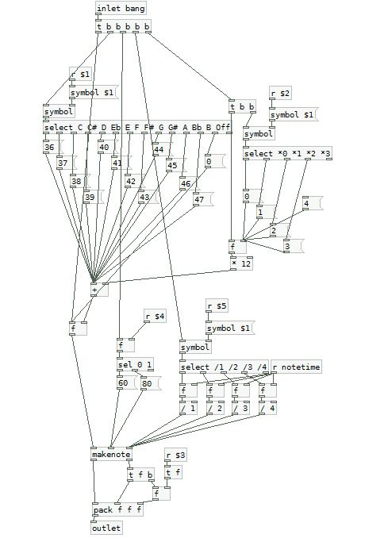
It’s important to notice how the data coming from the [taplist] abstractions is retrieved using the [symbol] object to convert the type of data we are receiving. Beware not to use ‘-‘ and ‘+’ symbols as those will be recognized as indicators to truncate the message.
SVG theming
Chris is explaining everything very well in the page dedicated to DroidParty. So in short, the simplest solution would be to use the .svg files packed with the program and edit them with any software you want (Inkscape did the trick for me, free and open source). The link between the object and the svg file is made through the ‘send-name’ attributed to this object in pd (right-click -> properties).
For instance if you create a vertical slider, you specify its send-name to “sliderX”, the corresponding svg file will need to have a name like “Slider-vertical-sliderX.svg”. This is also right for [taplist], [wordbutton], [touch] as well as for toggles, sliders. You cans also change the background of your app using background.svg.
RESSOURCES & ADVERTIZING
Check out CanOfBeats on the android market : https://market.android.com/details?id=cx.mccormick.canofbeats and buy it if you want to support droidparty !
A simpler version of the groove box is also available, the main difference is the interface of the drum sequence. Groove box uses a trick to display several patterns with one line of toggle enabling you to switch beetween them by touching a taplist object.
The acid bass synth used in this patch comes from this great set of pd abstractions : http://www.lesobjetsvolants.com/music/index.php
SPATIALISATION, AND AUTO-GÉNÉRATION
In this episode we will build an audio interactive application using auto generation and spatialization methods.
HOW DOES IT WORK ?
We want to place a few sounds on 2D plane, and be able to move them around, or make them move on their own We will control one bird (with several voices), crickets, frogs, critters and circadas. Under the selection button there is a [taplist] abstraction, you can hit it to change which element you can move on the 2D plance, below you can mute or unmute each sound.
Under the 'auto-move' button you can choose to move all of them randomly in one click, or move one according to the buttonyou hit.
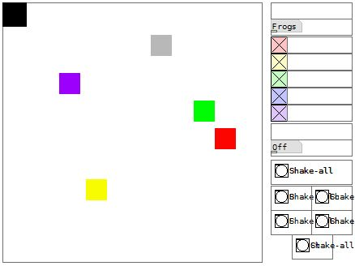
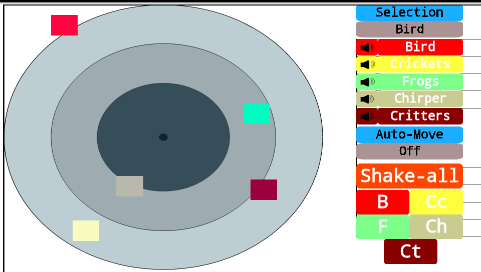
MAIN CONCEPTS
Once again please refer to the comment in the code to have further information . In this section we will focus on how to use images and how to move them across the screen aswell as randomizing some parameters of our program.
Firstofall it’s important to understand that we will not work with something like an image. At the time I'm writing this I can safely state that most of the object cannot be moved under android (this function of pd hasn’t been ported for droidparty yet). We will only depend on the [canvas] object for this kind of interaction (as we have successfully moved one in the 4th episode). We will use the same code : we use a [*300] object to adjust the output of a [touch] abstraction to the size of our surface.

The canvas doesn’t support yet the customization of several objects with several svg files. We will have to keep them as rendered by PdDroidParty.
USING [RANDOM]: TOWARDS PROBABILITIES
[random] is an object that will allow us to generate pseudo-random numbers. If you create a [random N] object, it will generate a number between 0 and N-1. You can then use several mathematical operations afterwards to force the output to be mapped to a specific interval. In the example below we will generate a time value between 0 and 1999ms and to position values between 0 and 279 with the help of a [line] we will then be able to create a movement from the previous position to a new one over a specified time
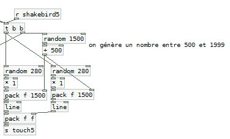
It is now easy to build a group of object that will be able to output a bang according to a probability set by the user. You just need to link a [random 100] to a [moses my_probability]. The example below illustrates this principle if you click on the bang on top you’ll have a 20% chance that the second bang will light up, unless you have changed the number inside the numberbox (which I did) so now it’s a 36% chance.
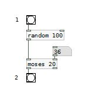
PANING
The [e_pan] object comes once again from the RJLib. It’s a classic stereo panoramic effect : in the left inlet you can enter a monophonic signal that will be panned to a stereophonic signal using a variable in the right inlet 0 is for left and 1 is for right.
![use of [e_pan]](../assets/tuto5-6.png)
We use one abstraction for each object, it will receive values from the movements of the interface through the routing system illustrated right below.
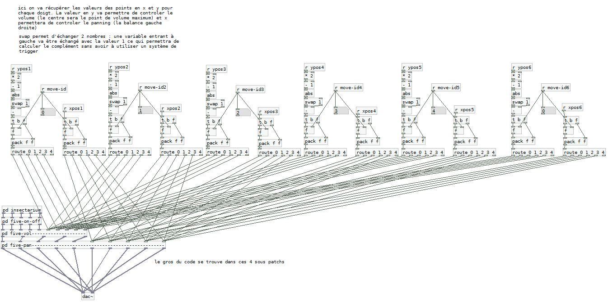
Each movement parameter xpos1 and ypos1 (for instances) are routed to the right inlets using the move_id parameters. The movement on the x-axis will control stereo placement, and the y-axis will control the volume.
USING [SWAP] : COLD AND HOT INLETS
For the volume we already get a value from 0 to 1 from the [touch] abstraction, but it outputs a 0 when we are on top of the screen and a 1 at the bottom. What we want is to have the maximum volume (ie 1) in the middle of the screen and 0 on top and at the bottom. We will need to write some code to achieve this :
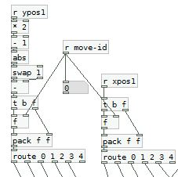
From (0,1) we multiply by 2 to get to (0,2) then we substract 1 to have a range of (-1,1). So after two objects we now have -1 on top and at the bottom, and 0 when we are in the middle of the screen. We can use [abs] to get the absolute value so now we have 1 on top and at the bottom , and still 0 in the middle. We are almost there… since we just have to calculate ones’ complement of this value. We can use [swap 1] to achieve this. [swap] will exchange inputs and outputs the number in the left inlet will be output to second outlet and vice versa.
For instance if we receive 0.4 at the left inlet and the argument is 1 we will have the number 1 output at the left outlet and 0.4 at the right outlet. We just have to to link those two outlet to both inlet of a [- ] object to get the complement.
We need to use [swap] to do this. This is because of what we call hot inlets and cold inlets. A hot inlet will re-evaluate the output each time a variable is throw at it (it’s generally the first inlet on the left), a cold inlet will just store the value waiting for the output to be evaluated. We already use this with [f ] : for instance we store a number using the right inlet but it’s not passed to the output right away, it will ba only when a bang is received on the left inlet.
USING [SWITCH~]
[switch~] is used to stop DSP (Digital Signal Processing) calculations within a subpatch or an abstraction. It’s usefull to save some CPU cycles when a subpatch is idle. For instance if we have a [noise~] object it will keep on calculating until we use [switch~] to stop it. You can use a basic audio gate to prevent sound from passing, but this will not stop calculations within [noise~] or others objects.
You only have to create the object in a subpatch and send it a 0 or a 1. Zero will stop calculations, one will enable them.

So we have discovered a few new concepts that will enable us to build more complex interfaces, creating movement, with several levers for interactivity. The use of [random] will be precious in the creation of generative systems.
RESSOURCES
For more information about spatialisation in Pure Data you can check this link. It’s the files from a workshop taught by Georg Holzman (you’ll need pd-extended though). http://grh.mur.at/misc/PdSpatialization.tar.gz
Check out Andy's amazing tutorials : http://obiwannabe.co.uk/tutorials/html/tutorials_main.html
A FULL FEATURED APPLICATION
This time we will create a much more complex application : a musical app that will be able to generate rhythm and melodies in a ‘smart’ way using markov-chains.
HOW DOES IT WORK ?

We have the possibility to change the tempo (at very high speed it can create nice textures). The screen can be split in three areas : the bar on top of the screen (switch the sequencer on/off, enter the speed, a audio/visual feedback of the metronome, and a button to reset everything, the left hand side of the screen (grey squares a line of four for 4 drum sounds, and 2*2 lines of six covering each a full octave for a both synths available) which is the playing area, and the right side of the screen which will enable us to control volumes/choose sounds/ choose the play mode and control effects.
The first thing is to choose a tempo, then start the sequencer. Once it’s a done a sequencer will start running, you can then play by hitting the grey square in the left area. According the play modes selected this will produces different behaviours.
The piano mode will let you play as the programm was a piano, the pencil mode will write the patterns you tap into a table, and the loop mode will play those notes as a loop. Combining those modes will help you to build a melody loop it and improvise on it without modifying its content. (above the synth-reset button, we have in order the piano, the pencil and the loop icons).
Two other modes are available : the training mode and the improvisation mode . This will control the markov chain stuff. What it means is that we can generate new melodies based on probability tables created by the analysis of the user input. (below the volume slide we have the training, and the improvise icons)
The vertical sliders are for the effects, the right ones are reverbs, the left one is a bitcrusher for the drum section, for both other instruments it’s a delay. Horizontal sliders control the volume of each instrument.

MARKOV CHAINS
The training mode will record all the notes played by the synthesizer once the button is pressed, when released the program will perform markov analysis. That is to say that it will organize notes to know the probability that one note will be followed by another note. For instance after analysis if you input a C in a markov chain it will have 30% chance to output a D, 15% chances to output a B and 55% of another C. Analysing a melody with a markov chain will give the probability for each base note to be followed by any other, using this data we will then be able to generate musical variation of those melodies. It becomes really interesting when using a markov chain to analyse harmonicity and a second one for rhythm.
It can sound a little complicated, but we will use abstractions from the Rjlib [c_markov] et [m_markovanal]. The help patches are available so check it out for more information.
So we will need two implementations one for the rhythm and one for the melody. For the melody we will receive through the left inlet synchronization data (rythmics bangs to play a melody), then the second inlet will receive the notes played, the third and fourth inlets will turn on or off the “training” and “play” modes (0 or 1). Concerning the rhythm we will receive through the left inlet a 1 if a note is played a 0 if no note is played.

[m_markovanal] will analyze a list of values and give us a histogram of the probabilities for each note in the list. In the training mode we will append all thoses notes in a message, once the training mode is off this list is dumped to [m_markovanal] that will output all the histograms ready to be used in the right inlet of [c_markov]. A [reset( message can be used to clear everything.
[c_markov] will help us to generate values according to those histogram we calculated. You just have to input a note in the left inlet and it will output a new note based on the probabilities. We will need to store the last note played to re-inject it at the hot inlet when we will need to calculate the next note.
We will use both objects two time for each synth : once for the rhythm and one for the harmony, that is to say four times in the whole patch.
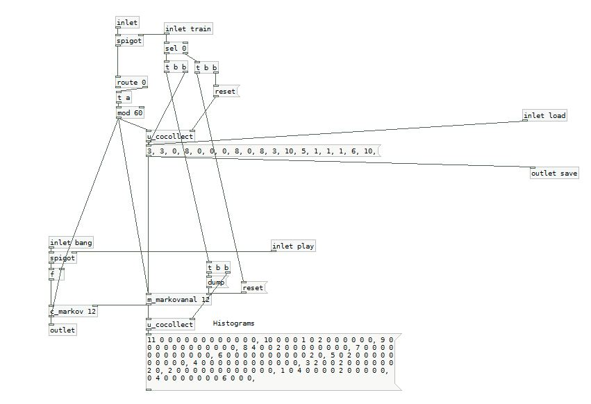
RESSOURCES
Markov chain on Wikipedia : http://en.wikipedia.org/wiki/Markov_chain
A full blog on algorithmique using pd : http://www.algorithmiccomposer.com/search/label/puredata